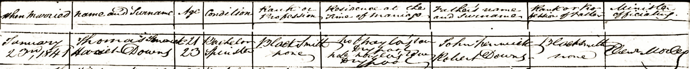

-
The Fenwicks in Australia
Thomas Fenwick (1823-1896)
Where did granddad Fred Fenwick’s red hair come from?
an argumentative manQuite possibly from his grandfather, Thomas Fenwick (1823-1896). Thomas was 47 when photographed with fellow aldermen outside the Shellharbour Council Chambers in 1870. His hair is lighter than all but one of his colleagues and only appears to be grey in parts of his beard, so it’s likely he had red hair. What we can glean about his personality from the many local newspaper accounts that mention him suggests that he matched the stereotype as well.
Thomas Fenwick
While the pioneers on Grandma Fenwick’s line — see Alexander McDonald (1815-1888) and Duncan McIntyre (1830-1916) — were establishing themselves in the Northern Rivers region of New South Wales, Granddad Fenwick’s forebears were further south, making waves in Shellharbour.
Thomas was born in Preston, Yorkshire. His father’s name was John and his mother’s was Anne. In his hometown, he became a farmer and blacksmith and married Harriet Downes (1818-1894), a house servant from the nearby village of Sculcoates (who was the daughter of Robert and Anna Downes).
Kingston-Upon-Hull 1842 at about the same time as when Thomas and Harriet were married there
The newlyweds decided to emigrate to NSW on an assisted passage. They departed from London at the beginning of March 1844 on the Royal Saxon and arrived in Sydney in late June. He was about 21 and his bride some four years older. Ship records tell us that they could both read and write and were in good health.
Under the conditions of their passage, Thomas was required to work for 12 months as a blacksmith for Captain Addison at his Lake House estate in Shellharbour south of Wollongong. (Captain Addison was the husband one of D’arcy Wentworth’s daughters—see below). Later, Thomas seems to have been promoted to manager. In all, he worked at the estate for nine years until the death of his employer.Marriage Record for Thomas Fenwick aged 21 and Harriet Downs aged 23

Shellharbour Village
From the Shellharbour Museum website:
Shellharbour Village was part of a grant of over 13,000 acres to D’Arcy Wentworth, named Peterborough. The grant included all the land from the Minnamurra River in the south to Lake Illawarra in the north. Five of Wentworth’s children, Martha, Sophia, MaryAnn, Catherine, and Robert inherited the estate in 1827. Captains Towns, Addison and Darley married three of Wentworth’s daughters, and the main streets in Peterborough (now Shellharbour Village) are named after them.
In 1843, Caroline Chisholm brought 23 families to settle at Peterborough on clearing leases. Captain Robert Towns allowed settlers to live on his part of the estate, rent-free for six to seven years, on the condition they clear the land of all trees and scrub. Each family was given a lease to clear the land, and set up a self-sufficient farm. The families were dropped off at the beach in the afternoon and spent the night under the roots of a large fig tree near the harbour. The next morning, they were picked up by bullock and dray, and transported to the site of their farm.
On 22 September 1851, the private town of Peterborough was laid out and registered. It was predicted that the town would become an important shipping port on the coast. In 1856, the Illawarra Mercury reported that Shellharbour was beginning to assume the appearance of a ‘hamlet or little town’. Eleven families lived in eleven houses and farmers came and went with drays, horseback or on foot, carrying the produce of the Peterborough Estate, Macquarie River and Stoney Creek to be shipped to Sydney. By 1857, many of the families had secured or leased homes and properties. They turned mainly to dairying.
» Thomas Fenwick (1823-1896) and Harriet Downs (1818-1894) had the following children:
Robert Thomas 17.07.1845 –
*Shellharbour06.03.1929
†Cooroym. Hellen Rankin 05.02.1873 Shellharbour NSW Charlotte Anne 01.01.1847 –
*Wollongong10.07.1934
†Waverleym. Stephen Fryer 1871 NSW Thomas 01.01.1852 –
*Illawarra11.07.1937
†Thirroulm. Frances Elizabeth Sharp 26.11.1896 Albion Park NSW William ??.??.1855 –
*Illawarra24.08.1932
†Waverleym. Mary Wilson 1877 Wollongong NSW
Wollongong, Stoney Range and the Shellharbour Council
After a short stint in Wollongong, Thomas selected land at Stoney Range in the Shellharbour area and become a farmer in his own right. However, farming probably wasn’t front and centre in his life.
For 22 years, he was a member of the Shellharbour Borough Council and was elected mayor on three occasions. He played an active role in organising the construction of Shellharbour’s breakwater and jetty and was also appointed a magistrate of the territory.
In a Council meeting report, the Illawarra Mercury of 18th February 1870 stated that, “Alderman Killalea remarked that he and Alderman Fenwick were two of the oldest residents of Shellharbour”. This rings true, because while free settlement began in the area in 1817, the township itself was not laid out until 1851.The Shellharbour Council Chambers, built from local basalt rubble, served the Council from 1865 to the late 1890s.
Thomas was also an active shareholder of the Shellharbour Steam Navigation Company, which local farmers formed in 1866 to ensure a shipping service to Sydney for their produce. The company’s first vessel was a schooner called Dairy Maid. The venture was so successful that profits paid for the vessel within five years. Later, the company invested in a steamer that bore the same name as its predecessor.
The Illawarra Mercury reported that the £3766 vessel arrived on 8 April 1876 to much fanfare, with a dinner held for 500 people “under a large awning erected on the beach, near the well-known fig trees … The jetty had a crowd of promenaders and really the scene reminded one of the gay appearance of an English watering place".
The Community Man
But Thomas didn’t limit himself to local politics and business interests. He was also a keen participant in community life generally, sometimes performing as a minstrel and humourist.
From the Kiama Independent and Shoalhaven Advertiser of Tues 26 Nov 1889:
A CONCERT in aid of funds for the local cricket club was held in the Temperance Hall Shellharbour on Tuesday evening 19th instant and was a decided success. For some time past Mr. A. Dettmer and others have been working with a will and their efforts have been crowned with success. The first item was a pianoforte duet by the Misses Hoy and Lindsey which were rendered in a pleasing manner.
The chairs were then occupied for the remainder of the first part of the performance, minstrelsy being the attraction. Mr. J. Inskip acted as "Johnson," and Messrs. Fenwick and Lynch as corner men. There were also on the chairs Messrs Carmody, Thomas, Holdern and Dettmer. Mr. C. Irish presided at the piano. Songs, choruses, and gags were given and well received, the whole winding up with the Ghost scene.
After a slight intermission Mr. Wood stepped forward as chairman of the concert and made a few remarks about its object, and also about the local cricket club. Misses Hoy and Lindsay again favoured the audience with another of their beautiful selections. Mr. G. Russel then gave a song, “Troubles await you my Boy,” and was in fine voice, receiving an encore.
Mr. H. Thomas’ song, with banjo accompaniment was the song of the evening. “His Lordship winked at the Counsel.” In this song Mr. Thomas’ fine voice mingled sweetly with the banjo and the result was a most vociferous encore, which was duly acknowledged. Mr. Carmody’s song and dance was much appreciated and he received an encore. Mr. Inskip sang in good style “McSorley’s Twins” and in response to an encore gave the last verse. Mr. E. Carmody next sang and did well. “Dear little Shamrock,” by Mr. Dettmer was pleasingly received.
Mr. Fenwick was very amusing in his Stump Speech. Mr. Holdern brought down the house with his song “Kissing” and was encored. Mr. Russell sang in his usual good style "The Fisherman and His Child.” Mr. Thomas again came in for much applause and an encore with “Papa’s Baby Boy.” Messrs. Fenwick and Inskip followed with a comic speech and this concluded the second part of the programme. Farce-The Star Restaurant - by Messrs. Fenwick, Dettmer, Lynch, Gallon, Inskip, Lewis, and others wound up the programme and was well performed, bringing a good evening’s entertainment to a close. About £17 10s was taken at the door. Dancing was then indulged in for some time.Weeds in the Courts
Despite his obvious community-mindedness, Thomas was not above a bit of stirring. In 1872, he appeared in the Kiama Police Court charged with allowing weeds to grow on a piece of land he co-leased with a Mr. Baxter. In the following year, he faced the same court on the same charge. Each time, he represented himself and argued vociferously that the charges were out of order because of technicalities concerning the council inspector’s appointment along with the fact that he was no longer responsible for the land in question. All to no avail ultimately.
In 1884, he was found guilty of slandering an old woman in the street. Again, he represented himself unsuccessfully and ended up with a fine of £30 plus costs.
Vigorous
Right: Thomas Fenwick’s speech was described as “vigorous and argumentative”.
When an Illawarra Mercury report described his 1887 speech in favour of harbour improvements as “argumentative”, it seemed to encapsulate his character. Perhaps Thomas was a frustrated lawyer, in which case he must have felt in his element when he became a magistrate in his later years.
The Weed Inspector vs Thomas Fenwick
From The Kiama Independent and Shoalhaven Advertiser,
Thurs 11 July 1872:
KIAMA POLICE COURT
TUESDAY, JULY 9
Their Worships J. Marks land J. Colley on the Bench.
C. Leggatt v. W. Baxter and T. Fenwick.
The plaintiff, as the weed inspector of the municipality of Shellharbour, brought the action under a by-law of the council against the defendants as joint lessees of a piece of land in the borough, known its Oak Flats, for allowing thistles and cotton plant to grow thereon.
A letter was received from the defendant, Baxter, asking for a week’s postponement of the case, as he was suffering from ophthalmia and other ailments, and was consequently quite incapable of attending the court. No objection was offered to this by the plaintiff, provided his costs for the day were secured. Indeed, that would appear to be the better course, for since the issue of the summonses he had heard that the defendant Fenwick had previously sold his interest in Oak Flats.
Mr. Fenwick, who was present, asked the plaintiff; by permission of the Bench, for the authority on which he acted for the council.
Plaintiff produced the Government Gazette containing his appointment dated 21st July 1871, and stated that his contract with the council was for twelve months.
Mr. Fenwick affirmed that the term of his engagement expired before the information was valid. The date of the Gazette was not the date of his appointment, and, on reference of the minute book of the Council, he found that the late Mayor had appointed him between two meetings, and that appointment was ratified at the meeting of Council on July 15, 1871; and, further, he (defendant) as Mayor of Shellharbour, knew that plaintiff had received a notice to the effect that his services would be dispensed with at the expiration of his term.
Plaintiff, being sworn, stated that his office dated from July 15, 1871, and he was the duly appointed weed inspector of the borough at the time he laid the information.
Mr. Fenwick, as a defendant, being incompetent to rebut this on oath, and having no evidence other than his own statement., the position assumed by the plaintiff before the Court was admitted.
Mr. Fenwick then objected to plead either guilty or not guilty, alleging that shortly after the trial of a similar case in April last, he sold his interest in the Oak Flats to a son of Mr. Baxter, and, consequently, was not responsible for the weeds growing there.
Plaintiff admitted that, for ought he knew to the contrary the statement was correct, and the Bench decided to postpone the case for a week.
After the other cases had been disposed of, Mr. Fenwick, who still remained in Court, addressing the Bench, said it was more than probable that Mr. Baxter would be in Sydney, whither he proposed going for medical assistance, and to dispose of the case without further trouble, he would plead guilty on his own behalf as well as for Mr. Baxter.
Their Worships assenting, a fine of 10s was inflicted and paid, together with 5s. 6d. costs.
From The Kiama Independent and Shoalhaven Advertiser,
Thurs 8 May 1873;
KIAMA POLICE COURT
TUESDAY, MAY 6
Their Worships J. Colley, J. Marks, and H. Connell on the Bench.
J. Thomas, weed inspector of the borough of Shellbarbour, v. Margaret Blaney.
Defendant was charged with allowing Scotch thistles to grow on her farm after due notice to eradicate them being given by the plaintiff, as the officer of the council. The Gazette containing the appointment of plaintiff was produced, also the by-laws of the council under which the case was brought.
From the statement of plaintiff it appeared that on or about the 18th of last December, soon after his appointment, he served every landholder in the borough with a notice (the only one) to extirpate the weeds. The majority of them had got rid of the weeds, but some few had neglected them, and of these the defendant was one. She admitted that in some bush—a part of her holding—nothing had been done and thistles were to be found, but the clear paddocks had been cleaned since the receipt of the notice, in other words she pleaded guilty to the charge.
The Bench were of opinion, first, that the notice on which action had been taken was of rather ancient date, nearly five months, which would allow of a second crop of thistles; and second, that having destroyed some thistles since the notice, defendant had in reality complied with the letter if not the spirit of the by law. Under these circumstances a withdrawal of the case was recommended, on defendant, who pleaded guilty, paying the expenses, 5s. 6d., which was agreed to.
Same vs W. Baxter and T. Fenwick
On same charge. Both defendants were present and Mr. Baxter admitted that thistles and cotton plant were to be found on the land which was an open run of unimproved land, but he, since receiving the notice had two men eradicating them, and the land was in places so rough and so overrun that ten years would not more than suffice—with regular attention—for their complete extirpation,
Mr. Fenwick said he must plead guilty to the existence of the weeds, and though he had made personal effort to subdue them, the run was on the eve of passing out of their hands, and it was not worth their while to be at the trouble or expense of cleaning it; but if they obtained another lease of the land it would then be their interest and duty to cleanse it. At the same time he took objection to the appointment of the plaintiff, and consequently to the legality of the whole proceedings.
The Municipalities Act said the council shall consist of nine aldermen. On this point the Act was imperative, yet by reason of the death of Alderman Killalea the council only consisted of eight members when the plaintiff was appointed, consequently the appointment in his opinion was not a legal one: the more so, as the ratepayers, by their own act—though invited in the usual way to do so—refused to fill up the vacancy. Mr. Fenwick explained the circumstances surrounding the extraordinary vacancy referred to, and the correspondence on the subject with the Colonial Secretary, and concluded that when the ratepayers refused to make the council complete, as required by law, it for all practical purposes became defunct, and it did for this reason, as it would appear, suspend all works, and consequently had no power to appoint an inspector of nuisances.
In answer to a question from the Bench, Mr. Fenwick said he was not aware that any suspension in the payment of rates took place.
The Bench hold that the objection was covered by the 115th clause of the Act, which provides that no proceeding of the council shall be invalidated in consequence of any vacancy in the number of aldermen, provided a quorum of the full number be present—or, at all events, the responsibility lay with the council. The objections as to length of notice and faulty construction of by-law existed in this case also, The by-law provides-first, that it is unlawful to allow weeds etc to grow; and, second, if the parties so offending fail to remove the weeds or any part of them within thirty days after notice, they shall, on conviction, pay etc. A literal interpretation of this would not, as observed by the Bench, hold anyone amenable to the penalty who, after receiving notice, destroyed two weeds. The same suggestion to withdraw the case on payment of costs by defendants was noted on…
The Kiama Independent and Shoalhaven Advertiser of Tues 8 January 1884
KIAMA DISTRICT COURT
Sarah Wilson v. T. Fenwick- slander damages £200
Mr Marshall appeared for plaintiff and defendant conducted his own case.
After a brief statement of the particulars of the case by Mr. Marshall, C. Jackson was called, and deposed:
That on the l0th December last, in Shellharbour, he heard Mrs. Wilson ask defendant to pay for a bullock he bought from her late husband, when Mr. Fenwick said she never had a husband in the colony, and he could prove it; he further said she was a lying old beggar.
Defendant declined asking witness any question as he was not present at the time. His Honor said he would not allow such an aspersion to be cast on an apparently respectable witness. Mrs. Wilson, the plaintiff, a decrepid old lady, was next called. She was evidently suffering from shortness of breath and excitement, and her evidence was difficult to hear and somewhat incoherent; but at intervals she said the evidence of Jackson was perfectly correct, and defendant did say that she never had a husband and he could prove it. Her. further evidence we could not hear distinctly, as the judge went close to plaintiff, and it was given in a low voice; but we understood it to be that she only came into court to clear her own character and remove, the stigma from the memory of her late husband, her children, and grandchildren;
Cross examined by defendant, she further stated that she did not speak to him in an insulting manner, she simply asked him to pay for the bullock he had purchased from her late husband. Defendant, being sworn, said he was going into Shellharbour when plaintiff sang out to him in a very insulting manner “When are you going to pay me for the bullock?” He was much annoyed, and said he never bought the bullock, and she ought to be ashamed of herself, and if she did not leave off her annoyance he must take some steps to make her; she then said, “You bought the bullock from my husband” and I replied “You never had one; he was sorry he had made use of the words but he did so on the spur of the moment without the slightest intention of injuring her reputation; there were only themselves present, and he most positively denied calling her a lying old beggar.
Miss Sciley was called and corroborated the evidence of Jackson, stating also that she was present and heard it. His Honor reviewed the evidence, and said plaintiff was justified in vindicating the character of herself, her late husband, her children, and grandchildren. Verdict for plaintiff, £30, and costs on the higher scale.
Harriet died in 1894, aged 76, becoming the subject of a lengthy article run by two newspapers. Thomas lived less than two years longer, only reaching 73. They were both buried in the Albion Park Anglican Cemetery.
The Kiama Independent and Shoalhaven Advertiser of Thurs 25 Oct 1894
also Illawarra Mercury of Tues 23 October
THE LATE MRS. THOMAS FENWICK
There passed away from this life, at Shellharbour on Monday. the 8th instant (says the " Illawarra Mercury "), one who had been a worthy resident of Illawarra for upwards of fifty years. We allude to Mrs. Fenwick wife of Mr Thomas Fenwick, J.P., of Stony Range Farm. As a wife, a mother, a neighbour, a member of the community in which she resided, the deceased was trustful and true, bearing to the grave, as she did in the full sense of the term, The white rose of a blameless life.
To her husband, who now deplores her death, though not as those without hope in regard to even a happier reunion in a better world, she was, as it were, a second part of himself, having travelled through life together, as they did, for more than 62 years with unruffled happiness in their conjugal relationship. And to her family of three sons and one daughter she was in a sentence, all that a loving mother could be.
She reached a good age, having passed her 76th year by a few months when summoned hence. Until about twelve years ago she enjoyed robust health, but since then weakness of the heart troubled her to a noticeable extent. Six weeks prior to her death she became ill with the then prevailing influences, and suffered rather severely but gradually recovered. An attack of bronchitis supervened, however, and prostrated her very much in her already weak state. She became better of that also in due course, but, unexpectedly even to her medical attendant, her heart suddenly gave way, and all was over in less time than it takes to state the said fact. So sudden and unlooked for was the closing scene on a Monday forenoon- that her husband only was beside her when the “vital spark” took its flight to Him who gave it.
The funeral took place on the following day, the remains being interred in the Church of England burial ground, Albion Park. A large number paid their respects to the memory of the deceased by following all that was mortal of her to the last resting place, where the Rev. J. Stack, of Dapto, conducted the funeral service.
Mr. Thomas Fenwick and his wife, both of whom were then strong and vigorous, arrived in Sydney in 1844. They left Detport, London, on the 1st of March of that year in the immigrant ship Royal Saxon, reaching Port Jackson on the 20th of June following. It will thus be noticed that the deceased had been a little over 50 years and three months in this colony at the time of her death.
Immediately after arrival at Sydney, Mr. Fenwick and his wife went to Shellharbour under engagement to the late Captain Addison, and for nine years he had the management of that gentleman's estate (now Mr. T. A. Reddall’s). In the course of his managerial position at "Lake House," as the homestead was then termed, Mr. Fenwick transacted all the business of the estate, including buying and selling. When the estate passed away from Captain Addison, Mr. Fenwick removed to Wollongong, where he remained but a few years, however, after which he returned to his first-love locality—Shellharbour. And there he has been a constant and useful resident ever since.
His present farm constitutes part of what is known as the Basset-Darley Estate, and on that he has resided about 22 years. As already remarked, he has played a useful part in the neighbourhood in which he has been so long located. He was 25 years a member of the Shellharbour Borough Council. He was three times mayor there-of. He has taken an active and forcible part in connection with all public movements in the place, including the Shellhharbour breakwater and jetty works and the local steam navigation company, which was started and carried out for years by sailing vessels. Several years ago he was appointed a magistrate of the territory. He is now in his 72nd year, and in the course of his career as an intelligent, active and observant colonist, he has witnessed many great changes that have taken place in Illawarra and other parts of the country within the last half century.
Granddad Fenwick’s father Robert Thomas Fenwick (1845- 1929) was the couple’s eldest child, born in Shellharbour almost exactly a year after they’d arrived in Australia. There were three other children: Charlotte, Thomas and William.
Children of Harriet Downe (1818-1894) and Thomas Fenwick (1823-1896)
1. Robert Thomas Fenwick (1845-1929) Our direct ancestor.
2. Charlotte Anne Fenwick (1847-1934) Born 1 January. Married Stephen Fryer in Kiama in 1871. Had six children. Died in Waverly, Sydney.
3. Thomas Fenwick (1852-) Married Fanny Sharpe.
4. William Fenwick (1852-1932) Born 23 October. Married Mary Wilson in Wollongong in 1877. Worked as a school teacher. Three children.
{kind=link}
{kind=link}
{kind=link}
{kind=link}
{kind=link}
{kind=link}
{kind=link}
{kind=link}
{kind=link}
About Us
We are the descendants of Anglo-Scottish-Prusso-Germanic Australian migrants who settled in the newly formed colonies of New South Wales and Queensland in the nineteenth century. The idea behind these pages is to present the stories and characters of those early settlers along with information about their origins, descendants, families, whereabouts and activities.There are often themes running through their struggles and achievements telling a tale of resourcefulness and hardships in an alien world. The paradox of Australia as an ancient and raw continent and as a 'New World' portrays a collision of ideals and realities yet still shows a continuity in how those people dealt with everyday life.